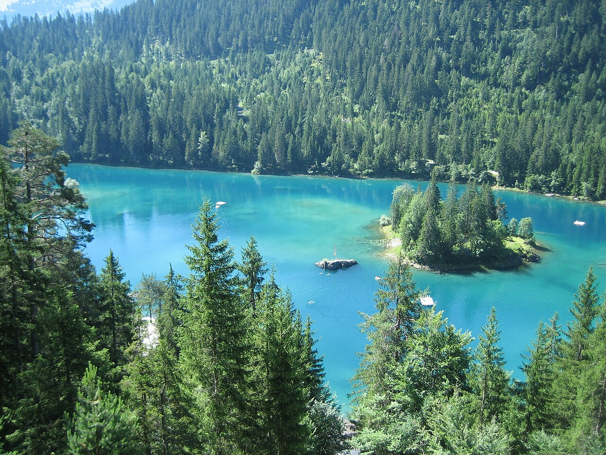
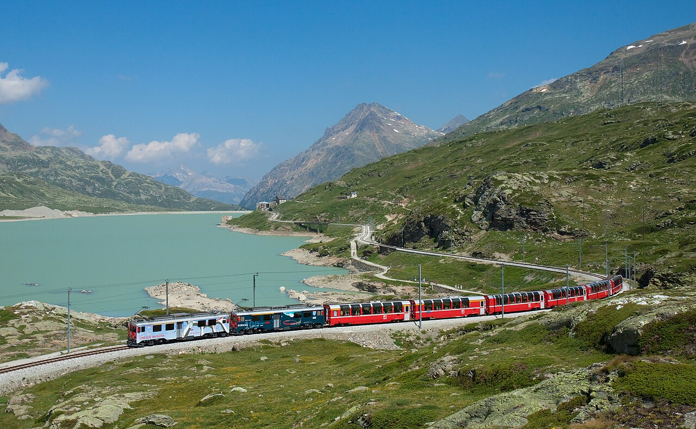
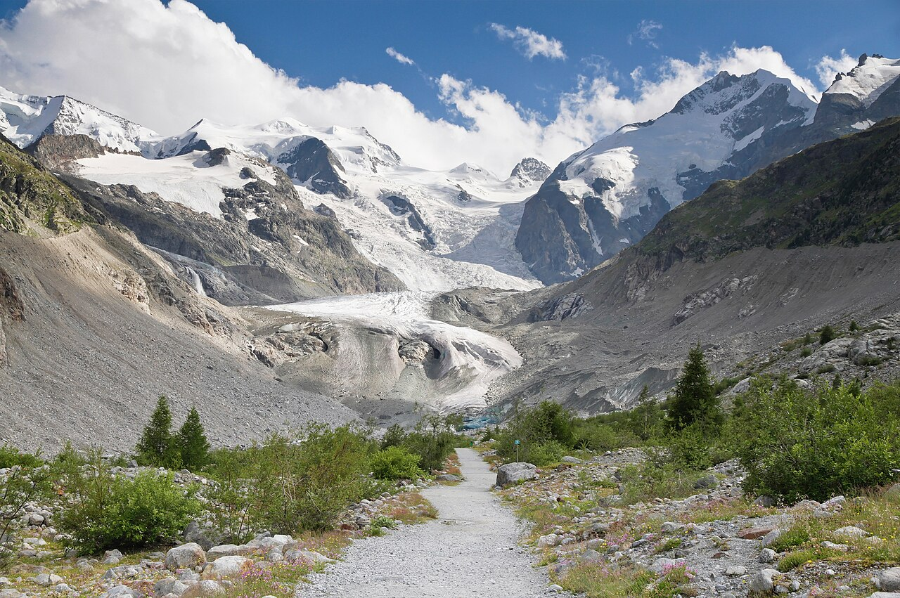
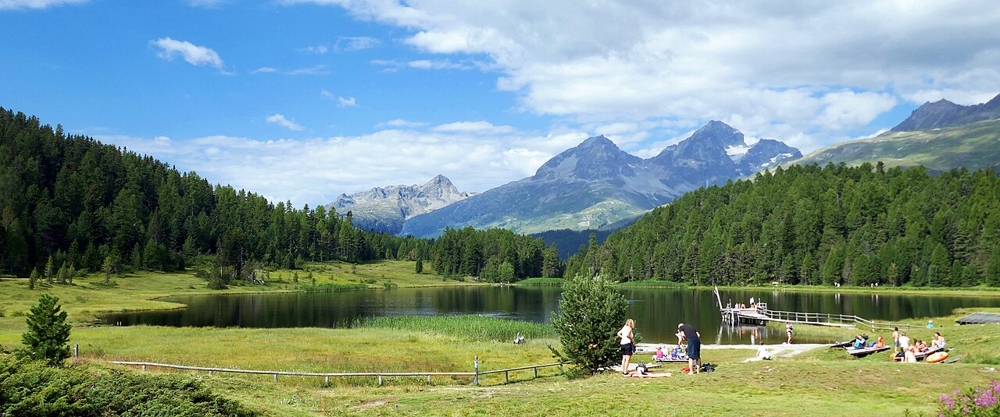
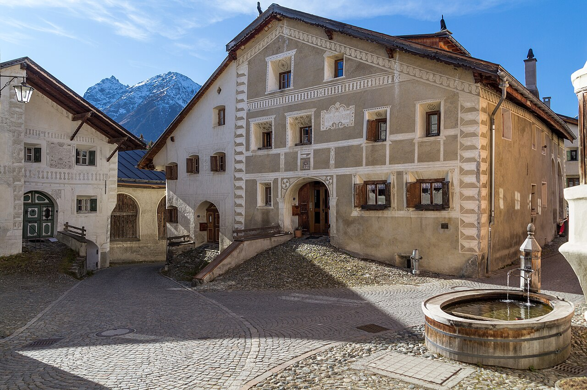

May
Not idealOff season: the summer lifts are closed and some hotels shut until June.
per person≈ €1 570–2 570

Switzerland's highest valley: silver lakes, the Bernina glaciers, sgraffito villages and hotels that include all mountain lifts in the room price.
Summer lifts open between ~6 and 27 June (2026: Muottas Muragl 6 June, Diavolezza 20 June). July and August have every lift, the warmest lakes and the most out of 'lifts included'.
July–August adds ≈ €110–190 per person here (+7 %), mostly for beds. Passes, food and most lift tickets cost the same all summer.
Off season: the summer lifts are closed and some hotels shut until June.
Lifts start between ~6 and 27 June. Late June is lovely and quiet.
Best month: every lift, warm lakes, flowers, and fewer crowds than the Bernese Oberland.
Warm and fully open. Busier with Italian visitors around mid-August.
Keep 1–2 days flexible and save the big mountain days for clear weather.
Langenfeld → Basel/Zürich → Chur → bus to Flims (≈ 6.5 h). Evening walk to the forest lakes.
Morning swim at turquoise Caumasee (a lift goes down to the beach, with an entry fee in summer) or the free, smaller Crestasee. Walk to the Il Spir platform above the Ruinaulta, the 'Swiss Grand Canyon'.
Chur → Filisur (Landwasser Viaduct viewpoint) → Bergün → spiral tunnels → Pontresina. Check in to a 'lifts included' hotel.
Glacier walk to the Morteratsch glacier tongue (signs show how far it has retreated), then Diavolezza for the Bernina massif.
Car-free Val Fex by foot or horse carriage, the Chastè peninsula on Lake Sils, and the hidden forest lake Lej da Staz on the way back.
Regional train (no reservation needed) to Ospizio Bernina → walk along Lago Bianco to Alp Grüm (≈ 1.5 h) → continue to Tirano for Italian lunch and gelato.
Train to Scuol. Afternoon at the Bogn Engiadina thermal spa.
Zernez visitor centre, then a trail in the park, e.g. Il Fuorn → Margunet, to spot chamois, ibex and marmots.
Hike the 'Schellen-Ursli' village of Guarda with its sgraffito houses → Ardez, and visit fairy-tale Tarasp castle.
Scuol → Vereina tunnel → Landquart → Zürich → Köln (≈ 7 h).





With 5 people, a holiday apartment with a kitchen is almost always cheapest. Book with free cancellation now and re-check prices later.
Scuol hostel ≈ CHF 58 pp in a 6-bed dorm. Ask whether your hostel takes part in 'Bergbahnen inklusive'.
≈ CHF 55–70 pp/nightPontresina, Samedan or Sils hotels in the scheme. The free lifts offset the higher room price.
≈ CHF 100–130 pp/nightA grand hotel with a Belle Époque lounge, or a mountain hotel above the lakes.
≈ CHF 200+ ppLangenfeld → Köln → Basel or Zürich → Chur (≈ 6 h). DB sells through-tickets to Chur. The Rhaetian Railway (RhB) takes over from there.
Half Fare Card (CHF 150) + tickets. In Upper Engadin most lifts and often buses are free with participating hotels. In Lower Engadin ask your host for the guest card. Budget ≈ CHF 120 more for half-price train tickets.
CHF per person for the whole trip in May–June, sharing everything between 5. 'Budget' = hostels/campsites and cooking. 'Comfort' = apartments/3★ hotels and more meals out.
| Item | Budget | Comfort |
|---|---|---|
| Train Langenfeld ⇄ Chur | 100 | 150 |
| Half Fare + Swiss tickets | 270 | 300 |
| Lifts & entries (many included) | 70 | 160 |
| Accommodation (9 nights) | 585 | 990 |
| Food | 380 | 700 |
| Buffer | 60 | 100 |
| Total (CHF) | 1 465 | 2 400 |
€ at 1 CHF ≈ €1.07. 2026 prices; Swiss fares rise ≈ 3–4 % from Dec 2026. Splurges are listed separately.
Today is late October 2026. See the overview page for the full timeline.